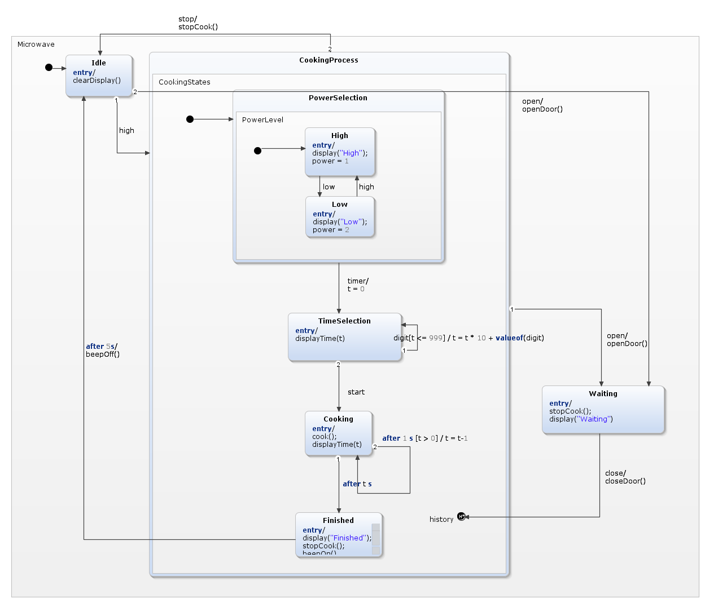

Voici quelques hypothèses et notre raisonnement derrière notre réseau de Pétri :
Nom: Simon Voglimacci Stéphanopoli
Matricule: 20002825
Courriel: simon.voglimacci.stephanopoli@umontreal.ca
temps mis: 8 heures
Nom: Julie Yang
Matricule: 20239909
Courriel: julie.yang@umontreal.ca
temps mis: 8 heures
Nom: Célina Zhang
Matricule: 20207461
Courriel: celina.zhang@umontreal.ca
temps mis: 8 heures
Soumetteur: Célina Zhang
| Tâche | Simon | Julie | Célina |
|---|---|---|---|
| Modélisation du réseau de Pétri | 25% | 25% | 50% |
| Analyse du réseau de Pétri | 25% | 25% | 50% |
| Modélisation du Statechart | 25% | 50% | 25% |
| Génération du code et application fonctionnelle | 25% | 50% | 25% |
| Révision du diagramme de classe | 50% | 25% | 25% |
| Révision du diagramme de séquence | 50% | 25% | 25% |
| Révision du diagramme de paquets | 50% | 25% | 25% |
| Révision des contraintes OCL | 50% | 25% | 25% |
| Identification des modules réutilisables | 50% | 25% | 25% |
| Discussion du couplage et de la cohésion des modules | 50% | 25% | 25% |
| Discussion du fardeau des classes | 50% | 0% | 50% |
| Graphe IA et justification | 25% | 50% | 25% |
| Identification des modules réutilisables | 25% | 25% | 50% |
Réseau de Pétri
Voici quelques hypothèses et notre raisonnement derrière notre réseau de Pétri :

Statechart

Voici quelques hypothèses et notre raisonnement derrière notre Statechart :

 Vérification des vols disponibles
Vérification des vols disponibles

{kind=link}